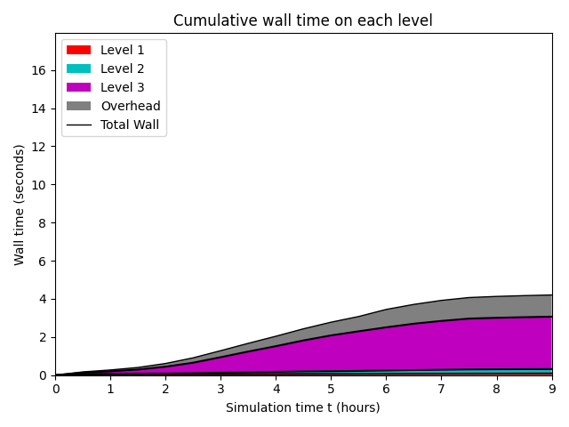
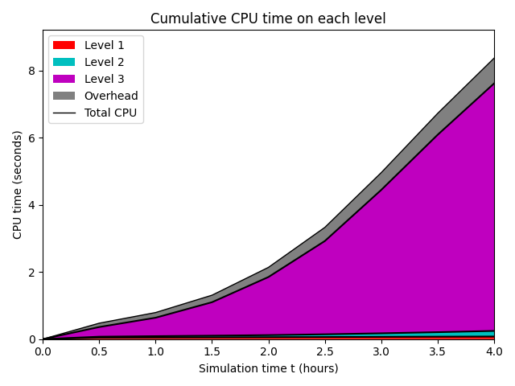
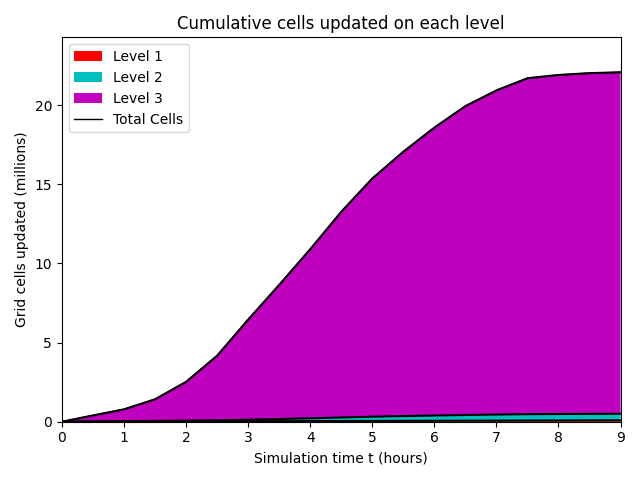
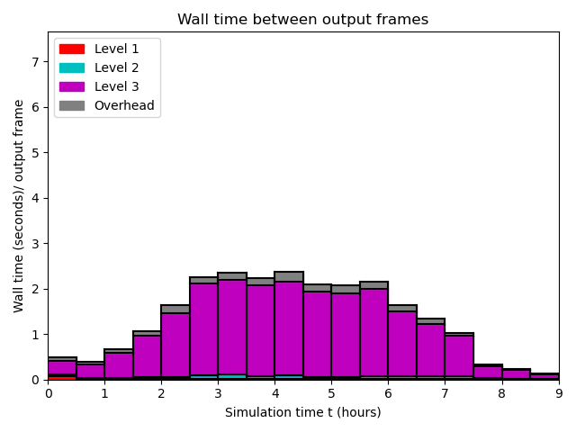
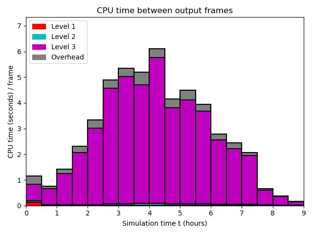
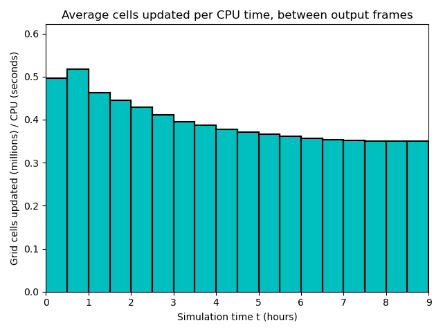

Datetime: 2020-04-18 12:34 From: /Users/rjl/clawpack_src/clawpack_master/geoclaw/examples/tsunami/chile2010/_output
============================== Timing Data ==============================
Integration Time (stepgrid + BC + overhead)
Level Wall Time (seconds) CPU Time (seconds) Total Cell Updates
1 0.214 0.213 0.864E+05
2 0.532 0.597 0.376E+06
3 12.160 34.638 0.200E+08
total 12.905 35.448 0.205E+08
All levels:
stepgrid 12.629 34.792
BC/ghost cells 0.263 0.640
Regridding 0.155 0.291
Output (valout) 2.726 2.692
Total time: 15.868 38.526
Using 3 thread(s)
Note: The CPU times are summed over all threads.
Total time includes more than the subroutines listed above
Note: timings are also recorded for each output step
in the file timing.csv.
clock_rate = 1000000000 per second, count_max = 9223372036854775807
clock_start = 1587238401824678000, clock_finish = 1587238417692771000
=========================================================================
  


